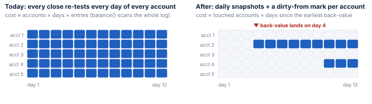
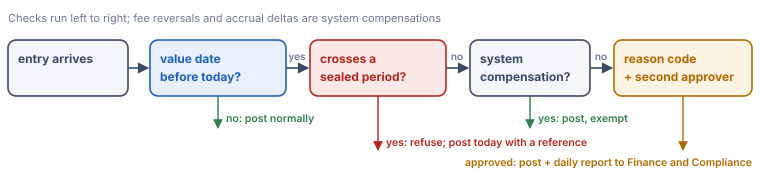
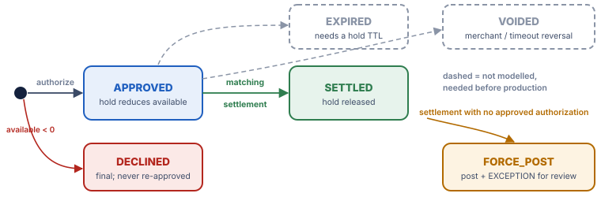

Matt Gholinejad · Staff Software Engineer take-home · repository: ledger-core (Python, standard library only)
The core keeps three append-only logs: ledger entries, interest accrual memos and authorization transitions. Money is stored as integer minor units. A back-valued event never edits the past. Instead, every end-of-day close re-evaluates each day of the window as it is now known and posts only the difference, as FEE/FEE_REVERSAL entries or accrual deltas. Stream order is processing order, so a late event inside the window is posted on the day it arrives and flagged. Everything below follows from those choices.
The end-of-day close breaks first, before memory or the write path. In the current design it costs
accounts × days-in-window × entries
for these reasons:
balance(account, day) scans the whole entry list, including other accounts' entries.balance() calls (two to restate the day, one for the report), plus a fee scan and an accrual scan.Both the number of entries and the number of days grow with history, so the close is quadratic in history and also multiplied by the number of accounts. At 100× volume the close no longer fits its batch window long before posting slows down. This is the same failure pattern as a nightly settlement job that drifts from 1 hour to 4: the per-record cost isn't the problem, the growth curve is.
| Structure | Why it grows | Bounded by |
|---|---|---|
entries | Append-only by definition. This is correct and must be kept. | Nothing in-memory. It needs tiered storage. |
| Restatement horizon | Every close re-tests every day back to Day 1. | Nothing. This is the real problem. |
received (dedupe IDs) | Every accepted event ID is kept forever, and the lookup is a linear scan. | Nothing. |
auth_log | Holds never expire. An approved, never-settled authorization stays active forever and so does its hold. | Nothing (see §3). |
accruals | Every restatement that changes a day's accrual appends a delta, and the whole log is scanned for every account-day. | Nothing. |
reported, reports, notices | One printed figure per account per day and one report per day. Notices: up to three per event (a WARNING if late, an INFO if back-valued, and an ERROR if refused or an EXCEPTION such as every force-post or over-hold settlement), plus one ERROR at every close for each day a non-AED account is overdrawn. | Nothing. |
dirty_from[account] = min(dirty_from, v).dirty_from forward. Each day's balance is the previous snapshot plus that day's entries.The cost drops to accounts (today only) + dirty account-days since each back-value. The entry log stays the source of truth: snapshots are a derived cache and can always be rebuilt by replay. Indexing entries by account is a one-line change that comes with it.

This defers the problem but does not remove it. A back-value to Day 1 still re-walks every day. The structural fix is a sealed period. After a period close, no entry may carry a value date inside it. A correction posts on the current date with a reference to the original, so the restatement horizon becomes bounded by policy, not by history. At that point the log can also be partitioned by account and by period, and sealed periods can move to cold storage with a checkpoint balance. The received set becomes an idempotency store with a TTL that matches the scheme's maximum retry window. I built that pattern for Colourlab AI's admin money actions (refunds, credit adjustments, grants). The key is unique per operator and key. A replay returns the first result, and the same key with a different payload gets a typed 409.
A value date lets an entry change a day that has already closed. In the replay, one back-valued debit (E7) caused fees on three days, zeroed three days of interest and caused a card decline. A reversal one day later then had to undo the fees and interest, but could not undo the decline. In a UAE-licensed bank each of those effects reaches a different owner:

In this core that means one check in _post plus an approved_by field on the entry. The record stays append-only, and the gate controls who may write it.
In this model an authorization has three states: APPROVED, DECLINED and SETTLED. Apart from a matching settlement it can end in only these ways. Each row gives the real-world scenario and the behaviour I would mandate. A request refused before any state exists (negative amount, unknown account, closed window) never becomes an authorization.

| How it ends in my model | Real-world scenario | Behaviour I would mandate |
|---|---|---|
| Declined at birth (available < 0 after the hold). Auth-B. | Insufficient funds. The merchant was told "declined" in real time. | This is terminal and immutable. A later credit or reversal (E9) must never approve it again. A retry by the merchant is a new authorization with its own decision. |
| Duplicate ID refused (the second request gets an ERROR). | The network resends after a timeout. This is the same request, not a new one. | Answer idempotently: return the original decision, keyed on the authorization ID plus a payload hash. If the payload differs under the same ID, raise an exception and don't post. |
| Never ends. It stays APPROVED, and its hold stays active forever. | Abandoned purchases, fuel and hotel pre-authorizations, or a lost merchant reversal message. | Expire it. Use a hold TTL per MCC that follows scheme rules (short for retail, longer for hotels and car rental). On expiry, post an EXPIRED transition that releases the hold. A settlement after expiry is posted as a force-post and raised as an exception. |
| A settlement that doesn't fit the authorization. If the authorization is DECLINED or already SETTLED, it is force-posted with an exception and the authorization is unchanged. If it is over the hold, it is posted with an exception. | An offline or force-posted transaction, a second presentment, or tips added after the authorization. | Post it, because the scheme has already paid the merchant. Route it to chargeback review within the dispute window. Allow tolerance bands per MCC (for example tips) before raising an exception. |
Not modelled, but needed before production:
| Simplification | Why it is in scope to cut | Production risk it defers |
|---|---|---|
| Single-sided entries per account, with no double entry | The brief asks for customer balances only. | The books can't be proven to balance. Fee income, interest expense, suspense and the scheme settlement account have no contra entries. Double entry is the first thing to add. |
| No persistence, single process | The brief says in-memory only. | A crash loses state. Production needs a durable write-ahead log before acknowledging any event, plus replay to rebuild. Downstream events need a transactional outbox, with the event row written in the same transaction as the entry, retried with capped exponential backoff and jitter. That is the design I shipped for Colourlab AI's trial events. |
| No concurrency control | The stream is replayed serially. | Two authorizations racing on the same account can both pass the available-balance check. This needs per-account serialization or optimistic versioning. |
| The close re-tests the whole window | Six days, two accounts. | The quadratic close described in §1. |
| Stream order is the clock, with no late-arrival cut-off | The brief fixes the order. | A statement goes out wrong, as with Day 5 for ACC-002, which the failing test shows. Production needs a cut-off time per booking day and correction notices. |
| No hold expiry, void, or incremental authorization | Not in the stream. | Holds that never release, so customers see less available balance than they have (§3). |
| A flat 0.04 % per day with per-day rounding | Matches the rule as written. | No day-count convention or tiers. Rounding drift of up to ±0.005 per day (0.79 paid against an exact 0.802). |
| Fee in AED only, no FX | The brief prices only an AED fee. | A non-AED account can't be charged. The close records an ERROR notice rather than guessing a rate. |
| Debits always post; no overdraft limit | The brief tests fees, not limits. | A customer can be overdrawn without bound. Production needs a limit, and a decline path for debits. |
| Reversals are full only, and a reversal can't be reversed | The stream reverses one whole debit once. | A partial refund or a corrected reversal can't be expressed. It needs partial reversals with a running reversed amount, and a rule for re-reversal. |
| No future-dated entries | The stream has none. | Scheduled payments can't be booked ahead. An entry whose value date is after the day it is processed is refused with an ERROR, not posted. |
| Days without a calendar | The window is abstract. | Weekends, holidays and cut-off times change value dates and fee days. |
| No operator identity, reason codes or approvals on entries | No users in scope. | No audit of who back-valued what, and no maker-checker (§2). |
The trade-off behind most of these cuts: I kept the parts the brief can falsify, which are replay order, the fee cascade, refunds, rounding and immutability, exact and tested. I documented the rest as deferred risk rather than half-building it.